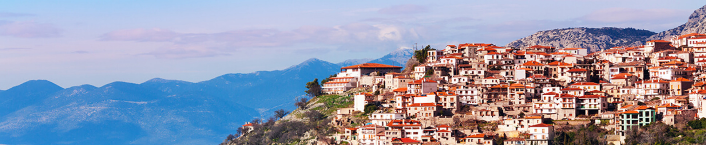

Quellen
- https://www.günstiger-reisen.de/griechenland/schnorcheln
- https://www.griechenland.de/kultur/
- https://de.wikipedia.org/wiki/Griechenland
- https://www.goruma.de/laender/europa/griechenland/landkarte-geografie
- https://de.wikipedia.org/wiki/Griechische_Mythologie
Bild-Quellen
- https://www.google.com/imgres?imgurl=https%3A%2F%2Fwww.studienreisen.de%2Fimg%2Freise%2F241485.jpg&imgrefurl=https%3A%2F%2Fwww.studienreisen.de%2Flaender%2FGriechenland&tbnid=Oc_bMSsmpopuUM&vet=10CLUBEDMohQNqFwoTCMjsqLyysfUCFQAAAAAdAAAAABAE..i&docid=gRaMxBNrT4JQOM&w=770&h=385&q=griechenland&ved=0CLUBEDMohQNqFwoTCMjsqLyysfUCFQAAAAAdAAAAABAE
- https://www.wetter-atlas.de/media/Klimatabelle/griechenland_klima_patras.jpg
- https://www.google.com/imgres?imgurl=https%3A%2F%2Fwww.rainbowgardenvillage.com%2Fuploads%2Fnavigation_item%2Fheaderimage%2F128%2Fheader_Griechenland-La%25CC%2588nderinfos-Banner-08.jpg&imgrefurl=https%3A%2F%2Fwww.rainbowgardenvillage.com%2Flaenderinfos%2Fgriechenland&tbnid=Ve6usYJH-cOB2M&vet=10CBsQMyi5AmoXChMIyOyovLKx9QIVAAAAAB0AAAAAEAQ..i&docid=3HZUQuIyBJ1vmM&w=1850&h=550&q=griechenland&ved=0CBsQMyi5AmoXChMIyOyovLKx9QIVAAAAAB0AAAAAEAQ
- https://www.google.com/imgres?imgurl=https%3A%2F%2Fimg3.oastatic.com%2Fimg2%2F26457475%2F1080x410r%2Fder-olymp-vom-golna-aus-gesehen.jpg&imgrefurl=https%3A%2F%2Fwww.outdooractive.com%2Fde%2Fbergsteigertouren%2Fgriechenland%2Fbergsteigen-in-griechenland%2F7062359%2F&tbnid=KJOWKvepFOZc9M&vet=10CBkQMyi4AmoXChMIyOyovLKx9QIVAAAAAB0AAAAAEAQ..i&docid=5T2ZvAKzA0N8cM&w=1080&h=410&q=griechenland&ved=0CBkQMyi4AmoXChMIyOyovLKx9QIVAAAAAB0AAAAAEAQ
- https://www.google.com/imgres?imgurl=https%3A%2F%2Fimage.urlaubspiraten.de%2F1024%2Fimage%2Fupload%2Fv1627546014%2FImpressions%2520and%2520Other%2520Assets%2FFolegandros_iStock-963607066_1_Kopie_tccjsb.jpg&imgrefurl=https%3A%2F%2Fwww.urlaubspiraten.de%2Freiseziele%2Fgriechenland&tbnid=s8_430PU9N_9GM&vet=10CKYBEDMomAJqFwoTCMjsqLyysfUCFQAAAAAdAAAAABAD..i&docid=Apz2gFZLtYkW3M&w=1024&h=468&itg=1&q=griechenland&ved=0CKYBEDMomAJqFwoTCMjsqLyysfUCFQAAAAAdAAAAABAD
- https://www.google.com/imgres?imgurl=https%3A%2F%2Fcdn0.scrvt.com%2F954371187f9758716188a4deb091ab66%2F13d2b13481f6d44c%2F598afd3057b2%2F1140x335-TopTeaser-griechenland-berge.jpg&imgrefurl=https%3A%2F%2Fwww.berge-meer.de%2Fthema%2Fall-inclusive%2Fziel%2Fgriechenland&tbnid=oR7dHZcfp9xNwM&vet=10CIEBEDMohgJqFwoTCMjsqLyysfUCFQAAAAAdAAAAABAD..i&docid=qi8NfwXuBiullM&w=1140&h=335&itg=1&q=griechenland&ved=0CIEBEDMohgJqFwoTCMjsqLyysfUCFQAAAAAdAAAAABAD
- https://www.google.com/imgres?imgurl=https%3A%2F%2Fimg0.oastatic.com%2Fimg2%2F15939779%2F1080x410r%2Fgriechenland.jpg&imgrefurl=https%3A%2F%2Fwww.outdooractive.com%2Fde%2Fland%2Fgriechenland%2F1037056%2F&tbnid=8rpLHU7RBaDz1M&vet=10CLoBEDMovgFqFwoTCMjsqLyysfUCFQAAAAAdAAAAABAC..i&docid=GRDFGnMcW8z12M&w=1080&h=410&itg=1&q=griechenland&ved=0CLoBEDMovgFqFwoTCMjsqLyysfUCFQAAAAAdAAAAABAC
- https://www.google.com/imgres?imgurl=https%3A%2F%2Fwww.taruk.com%2Ffileadmin%2Fuser_upload%2FKONTINENTE%2FEUROPA%2FREISEN%2FGRIECHENLAND%2FLAND_UND_LEUTE%2FHEADER_BILD%2FMykonos-Griechenland-Reise-Kueste-Strand-Windmuehlen.jpg&imgrefurl=https%3A%2F%2Fwww.taruk.com%2Fland-leute%2Feuropa%2Fgriechenland%2F&tbnid=47IJJyvMaBCoSM&vet=12ahUKEwiFiuansrH1AhUaXfEDHYBjBoEQMygdegUIARDDAQ..i&docid=Plk4UYnOUTrf_M&w=2880&h=825&q=griechenland&ved=2ahUKEwiFiuansrH1AhUaXfEDHYBjBoEQMygdegUIARDDAQ
- https://www.google.com/imgres?imgurl=https%3A%2F%2Fcdn0.scrvt.com%2F954371187f9758716188a4deb091ab66%2Fdf1541a732618a0f%2F2cfb7fcfc8ff%2FGriechenland-Santorin-Topteaser-1140x335.jpg&imgrefurl=https%3A%2F%2Fwww.berge-meer.de%2Fthema%2Fbadeurlaub%2Fziel%2Fgriechenland&tbnid=P1jizntPbkXJnM&vet=12ahUKEwiFiuansrH1AhUaXfEDHYBjBoEQMyhHegQIARBK..i&docid=VrHVTEkBTo-FcM&w=1140&h=335&q=griechenland&ved=2ahUKEwiFiuansrH1AhUaXfEDHYBjBoEQMyhHegQIARBK